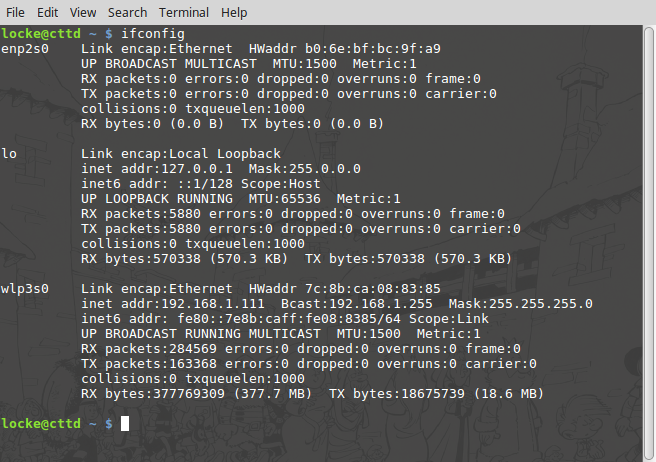
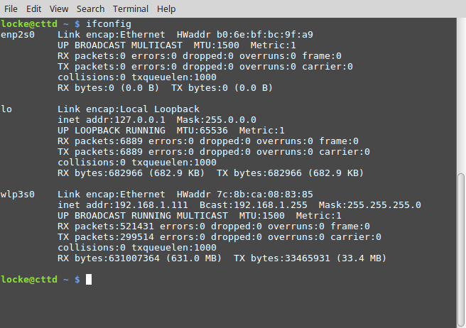

Disable IPv6
IPv6 là một tính năng mới, nhưng không phải chương trình nào cũng hỗ trợ. Việc sử dụng IPv6 có thể làm một số chương trình chạy chậm do cố gắng kết nối đến server theo kiểu IPv6.
Trước khi disable IPv6:

Kiểm tra bằng lệnh sysctl:
sysctl net.ipv6.conf.all.disable_ipv6
Trả về net.ipv6.conf.all.disable_ipv6 = 0 nghĩa là chưa được disable.
Để disable, sửa file /etc/sysctl.conf:
sudo vi /etc/sysctl.conf
Thêm dòng sau:
net.ipv6.conf.all.disable_ipv6 = 1
Để áp dụng thực hiện lệnh sau:
sudo sysctl -p
Kết quả:

- ipaddressguide.comIPv6 Compatibility Test For Website | IPAddressGuide
- ictnews.vn3 công cụ kiểm tra IPv6 đã sẵn sàng trên máy chưa - ICTNEWS
- quantrimang.comCách kiểm tra kết nối IPv6 - Quantrimang.com
- hcmfpt.vnHướng dẫn kiểm tra IPv6 của nhà mạng và máy tính
- gitlab.icm-institute.orgHướng dẫn cách kiểm tra IPV6 của nhà mạng FPT và máy tính (#3) · Issues · Jon Han / ldink · GitLab